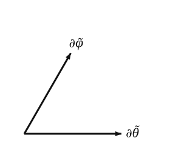
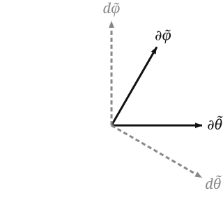

The skew chart in this book is defined so its grid is visibly tilted relative to the standard chart — the longitude circles are sheared, the latitude circles stay horizontal. (See the diagram on the previous page .) The tilt parameter is fixed throughout: α = π / 8 ≈ 22.5 ° \alpha = \pi/8 \approx 22.5° α = π /8 ≈ 22.5°
The simplest definition that gives that picture keeps the standard θ \theta θ
θ ~ : = θ , φ ~ : = φ + α cos θ . \tilde\theta := \theta, \qquad \tilde\varphi := \varphi + \alpha\, \cos\theta.
θ ~ := θ , φ ~ := φ + α cos θ .
The shift by α cos θ \alpha\cos\theta α cos θ ( θ , φ ) ↦ ( θ ~ , φ ~ ) (\theta, \varphi) \mapsto (\tilde\theta, \tilde\varphi) ( θ , φ ) ↦ ( θ ~ , φ ~ ) det = 1 \det = 1 det = 1
In the embedded picture,
Φ ~ ( θ ~ , φ ~ ) = Φ ( θ ~ , φ ~ − α cos θ ~ ) = ( sin θ ~ cos ψ , sin θ ~ sin ψ , cos θ ~ ) , ψ : = φ ~ − α cos θ ~ . \tilde\Phi(\tilde\theta, \tilde\varphi) = \Phi\big(\tilde\theta,\, \tilde\varphi - \alpha\cos\tilde\theta\big) = (\sin\tilde\theta\, \cos\psi,\; \sin\tilde\theta\, \sin\psi,\; \cos\tilde\theta), \quad \psi := \tilde\varphi - \alpha\cos\tilde\theta.
Φ ~ ( θ ~ , φ ~ ) = Φ ( θ ~ , φ ~ − α cos θ ~ ) = ( sin θ ~ cos ψ , sin θ ~ sin ψ , cos θ ~ ) , ψ := φ ~ − α cos θ ~ .
Basis vectors
Differentiating the embedded formula:
∂ θ ~ = ∂ Φ ~ ∂ θ ~ = ( cos θ ~ cos ψ − α sin 2 θ ~ sin ψ , cos θ ~ sin ψ + α sin 2 θ ~ cos ψ , − sin θ ~ ) , ∂ φ ~ = ∂ Φ ~ ∂ φ ~ = ( − sin θ ~ sin ψ , sin θ ~ cos ψ , 0 ) . \begin{aligned}
\partial_{\tilde\theta} &= \frac{\partial \tilde\Phi}{\partial \tilde\theta} = (\cos\tilde\theta\,\cos\psi - \alpha\sin^2\tilde\theta\,\sin\psi, \; \cos\tilde\theta\,\sin\psi + \alpha\sin^2\tilde\theta\,\cos\psi, \; -\sin\tilde\theta), \\
\partial_{\tilde\varphi} &= \frac{\partial \tilde\Phi}{\partial \tilde\varphi} = (-\sin\tilde\theta\,\sin\psi, \; \sin\tilde\theta\,\cos\psi, \; 0).
\end{aligned} ∂ θ ~ ∂ φ ~ = ∂ θ ~ ∂ Φ ~ = ( cos θ ~ cos ψ − α sin 2 θ ~ sin ψ , cos θ ~ sin ψ + α sin 2 θ ~ cos ψ , − sin θ ~ ) , = ∂ φ ~ ∂ Φ ~ = ( − sin θ ~ sin ψ , sin θ ~ cos ψ , 0 ) .
In terms of the standard basis vectors ∂ θ , ∂ φ \partial_\theta, \partial_\varphi ∂ θ , ∂ φ S 2 S^2 S 2
∂ θ ~ = ∂ θ + α sin θ ~ ∂ φ , ∂ φ ~ = ∂ φ . \partial_{\tilde\theta} = \partial_\theta + \alpha\sin\tilde\theta\, \partial_\varphi, \qquad \partial_{\tilde\varphi} = \partial_\varphi.
∂ θ ~ = ∂ θ + α sin θ ~ ∂ φ , ∂ φ ~ = ∂ φ .
This is more compact and more informative than the embedded formula. The skew basis vector ∂ φ ~ \partial_{\tilde\varphi} ∂ φ ~ the same tangent vector as the standard ∂ φ \partial_\varphi ∂ φ ∂ / ∂ φ ~ = ∂ / ∂ φ \partial / \partial\tilde\varphi = \partial / \partial \varphi ∂ / ∂ φ ~ = ∂ / ∂ φ θ \theta θ ∂ θ ~ \partial_{\tilde\theta} ∂ θ ~ ∂ θ \partial_\theta ∂ θ plus a contribution along ∂ φ \partial_\varphi ∂ φ α sin θ ~ \alpha \sin\tilde\theta α sin θ ~ θ \theta θ sin θ \sin\theta sin θ
Non-orthogonality
The inner product of the two skew basis vectors:
∂ θ ~ ⋅ ∂ φ ~ = ( ∂ θ + α sin θ ~ ∂ φ ) ⋅ ∂ φ = ∂ θ ⋅ ∂ φ + α sin θ ~ ∣ ∂ φ ∣ 2 = 0 + α sin θ ~ ⋅ sin 2 θ ~ = α sin 3 θ ~ . \partial_{\tilde\theta} \cdot \partial_{\tilde\varphi} = (\partial_\theta + \alpha\sin\tilde\theta\, \partial_\varphi) \cdot \partial_\varphi = \partial_\theta \cdot \partial_\varphi + \alpha\sin\tilde\theta\, |\partial_\varphi|^2 = 0 + \alpha\sin\tilde\theta \cdot \sin^2\tilde\theta = \alpha \sin^3\tilde\theta.
∂ θ ~ ⋅ ∂ φ ~ = ( ∂ θ + α sin θ ~ ∂ φ ) ⋅ ∂ φ = ∂ θ ⋅ ∂ φ + α sin θ ~ ∣ ∂ φ ∣ 2 = 0 + α sin θ ~ ⋅ sin 2 θ ~ = α sin 3 θ ~ .
Non-zero away from the poles. This is the entry g θ ~ φ ~ g_{\tilde\theta\tilde\varphi} g θ ~ φ ~ the metric in the skew chart, and the most direct sign that the chart is “non-orthogonal.”
The angle between the skew basis vectors:
cos ∠ ( ∂ θ ~ , ∂ φ ~ ) = ∂ θ ~ ⋅ ∂ φ ~ ∣ ∂ θ ~ ∣ ∣ ∂ φ ~ ∣ = α sin 3 θ ~ 1 + α 2 sin 4 θ ~ ⋅ sin θ ~ = α sin 2 θ ~ 1 + α 2 sin 4 θ ~ . \cos \angle(\partial_{\tilde\theta}, \partial_{\tilde\varphi}) = \frac{\partial_{\tilde\theta} \cdot \partial_{\tilde\varphi}}{|\partial_{\tilde\theta}|\, |\partial_{\tilde\varphi}|} = \frac{\alpha\sin^3\tilde\theta}{\sqrt{1 + \alpha^2 \sin^4 \tilde\theta} \, \cdot \sin\tilde\theta} = \frac{\alpha\sin^2\tilde\theta}{\sqrt{1 + \alpha^2 \sin^4\tilde\theta}}.
cos ∠ ( ∂ θ ~ , ∂ φ ~ ) = ∣ ∂ θ ~ ∣ ∣ ∂ φ ~ ∣ ∂ θ ~ ⋅ ∂ φ ~ = 1 + α 2 sin 4 θ ~ ⋅ sin θ ~ α sin 3 θ ~ = 1 + α 2 sin 4 θ ~ α sin 2 θ ~ .
At θ ~ = π / 2 \tilde\theta = \pi/2 θ ~ = π /2 α = π / 8 \alpha = \pi/8 α = π /8 α / 1 + α 2 ≈ 0.366 \alpha/\sqrt{1+\alpha^2} \approx 0.366 α / 1 + α 2 ≈ 0.366 69 ° 69° 69° 90 ° 90° 90°
At the sample point
With θ ~ 0 = θ 0 = 13 π / 32 , φ ~ 0 = φ 0 + α cos θ 0 \tilde\theta_0 = \theta_0 = 13\pi/32, \tilde\varphi_0 = \varphi_0 + \alpha\cos\theta_0 θ ~ 0 = θ 0 = 13 π /32 , φ ~ 0 = φ 0 + α cos θ 0
∣ ∂ θ ~ ∣ 2 = 1 + α 2 sin 4 θ ~ 0 ≈ 1 + ( π / 8 ) 2 ( 0.957 ) 4 ≈ 1.129. |\partial_{\tilde\theta}|^2 = 1 + \alpha^2 \sin^4 \tilde\theta_0 \approx 1 + (\pi/8)^2 (0.957)^4 \approx 1.129.
∣ ∂ θ ~ ∣ 2 = 1 + α 2 sin 4 θ ~ 0 ≈ 1 + ( π /8 ) 2 ( 0.957 ) 4 ≈ 1.129.
∣ ∂ φ ~ ∣ 2 = sin 2 θ ~ 0 ≈ 0.916. |\partial_{\tilde\varphi}|^2 = \sin^2 \tilde\theta_0 \approx 0.916.
∣ ∂ φ ~ ∣ 2 = sin 2 θ ~ 0 ≈ 0.916.
cos ∠ ≈ ( π / 8 ) ( 0.957 ) 2 1.129 ≈ 0.338 , \cos \angle \approx \frac{(\pi/8)(0.957)^2}{\sqrt{1.129}} \approx 0.338,
cos ∠ ≈ 1.129 ( π /8 ) ( 0.957 ) 2 ≈ 0.338 ,
so the angle is about 70.2 ° 70.2° 70.2°
The tangent-plane diagram in the skew chart:

The diagram exaggerates the obliqueness slightly (it’s drawn at 60 ° 60° 60°
Dual basis
The dual basis d θ ~ , d φ ~ d\tilde\theta, d\tilde\varphi d θ ~ , d φ ~ d θ ~ ( ∂ θ ~ ) = 1 d\tilde\theta(\partial_{\tilde\theta}) = 1 d θ ~ ( ∂ θ ~ ) = 1 d θ ~ ( ∂ φ ~ ) = 0 d\tilde\theta(\partial_{\tilde\varphi}) = 0 d θ ~ ( ∂ φ ~ ) = 0 other coordinate basis vector, because d θ ~ ( ∂ φ ~ ) = d φ ~ ( ∂ θ ~ ) = 0 d\tilde\theta(\partial_{\tilde\varphi}) = d\tilde\varphi(\partial_{\tilde\theta}) = 0 d θ ~ ( ∂ φ ~ ) = d φ ~ ( ∂ θ ~ ) = 0
d θ ~ ⊥ ∂ φ ~ d\tilde\theta \perp \partial_{\tilde\varphi} d θ ~ ⊥ ∂ φ ~ d θ ~ d\tilde\theta d θ ~ ∂ θ ~ \partial_{\tilde\theta} ∂ θ ~ d φ ~ ⊥ ∂ θ ~ d\tilde\varphi \perp \partial_{\tilde\theta} d φ ~ ⊥ ∂ θ ~ d φ ~ d\tilde\varphi d φ ~ ∂ φ ~ \partial_{\tilde\varphi} ∂ φ ~

Talking about covectors’ lengths and angles at all — and drawing them as arrows in the same plane as the basis vectors — means identifying each covector with a vector through the metric, i.e. applying the musical isomorphism ♯ \sharp ♯ d θ ~ d\tilde\theta d θ ~ d φ ~ d\tilde\varphi d φ ~ π / 2 \pi/2 π /2 supplement of the angle between ∂ θ ~ \partial_{\tilde\theta} ∂ θ ~ ∂ φ ~ \partial_{\tilde\varphi} ∂ φ ~ inverse metric, and inverting a 2 × 2 2 \times 2 2 × 2 g θ ~ φ ~ = − g θ ~ φ ~ / det g g^{\tilde\theta\tilde\varphi} = -g_{\tilde\theta\tilde\varphi}/\det g g θ ~ φ ~ = − g θ ~ φ ~ / det g ≈ 70 ° \approx 70° ≈ 70° ≈ 110 ° \approx 110° ≈ 110°
Coordinate functions
To complete the picture: what are the coordinate functions θ ~ , φ ~ \tilde\theta, \tilde\varphi θ ~ , φ ~ S 2 S^2 S 2
θ ~ ( p ) = θ ( p ) , φ ~ ( p ) = φ ( p ) + α cos θ ( p ) , \tilde\theta(p) = \theta(p), \qquad \tilde\varphi(p) = \varphi(p) + \alpha\, \cos\theta(p),
θ ~ ( p ) = θ ( p ) , φ ~ ( p ) = φ ( p ) + α cos θ ( p ) ,
with θ , φ \theta, \varphi θ , φ d θ ~ , d φ ~ d\tilde\theta, d\tilde\varphi d θ ~ , d φ ~
The next page works out the relation between the two charts — the Jacobian, and what it means to transform components between them.
Metric
A smooth symmetric non-degenerate ( 0 , 2 ) (0, 2) ( 0 , 2 ) tensor field g = g μ ν d x μ ⊗ d x ν \tens{g} = g_{\mu\nu}\, dx^\mu \otimes dx^\nu g = g μν d x μ ⊗ d x ν g μ ν g^{\mu\nu} g μν g μ ρ g ρ ν = δ ν μ g^{\mu\rho} g_{\rho\nu} = \delta^\mu_\nu g μ ρ g ρ ν = δ ν μ signature is the numbers of positive and negative eigenvalues:
Riemannian: all positive; lengths and angles are defined.Lorentzian: ( − , + , + , + ) (-, +, +, +) ( − , + , + , + )
It supplies the musical isomorphisms , the volume form , and the Levi-Civita connection . Defined on the metric-tensor page .
Musical isomorphism
The metric’s canonical identification of vectors with covectors. On a bare manifold the tangent space and its dual have the same dimension but no canonical isomorphism between them (contrast the double dual, where V ∗ ∗ ≅ V V^{**} \cong V V ∗∗ ≅ V is canonical). A metric g \tens{g} g musical isomorphisms
♭ : T p M → T p ∗ M , v ♭ : = g ( v , ⋅ ) , ♯ : = ♭ − 1 : T p ∗ M → T p M , \flat: T_p M \to T^*_p M, \qquad \tens{v}^\flat := \tens{g}(\tens{v}, \cdot), \qquad \sharp := \flat^{-1}: T^*_p M \to T_p M,
♭ : T p M → T p ∗ M , v ♭ := g ( v , ⋅ ) , ♯ := ♭ − 1 : T p ∗ M → T p M ,
named for how they move the component index down (v μ = g μ ν v ν v_\mu = g_{\mu\nu}\, v^\nu v μ = g μν v ν ω μ = g μ ν ω ν \omega^\mu = g^{\mu\nu}\, \omega_\nu ω μ = g μν ω ν raising and lowering applied to a single index. Previewed pointwise in Part I’s aside .
The gradient is the standard illustration of the distinction ♯ \sharp ♯ d f df df gradient grad f : = ( d f ) ♯ \operatorname{grad} f := (df)^\sharp grad f := ( df ) ♯ R n \mathbb{R}^n R n g μ ν ≠ δ μ ν g_{\mu\nu} \neq \delta_{\mu\nu} g μν = δ μν
Tensor field
A tensor field of type ( r , s ) (r, s) ( r , s ) M M M p ∈ M p \in M p ∈ M
T p M ⊗ r ⊗ T p ∗ M ⊗ s . T_p M^{\otimes r} \otimes T^*_p M^{\otimes s}.
T p M ⊗ r ⊗ T p ∗ M ⊗ s .
Equivalently, a C ∞ ( M ) C^\infty(M) C ∞ ( M ) r r r 1 1 1 s s s ( 1 , 0 ) (1, 0) ( 1 , 0 ) 1 1 1 ( 0 , 1 ) (0, 1) ( 0 , 1 ) k k k ( 0 , k ) (0, k) ( 0 , k ) ( 0 , 2 ) (0, 2) ( 0 , 2 )
Levi-Civita
Three related but distinct objects share the name.
Levi-Civita symbol. The totally antisymmetric symbol ε μ 1 ⋯ μ n \varepsilon_{\mu_1 \cdots \mu_n} ε μ 1 ⋯ μ n ε 1 ⋯ n = 1 \varepsilon_{1 \cdots n} = 1 ε 1 ⋯ n = 1 tensor density of weight + 1 +1 + 1
Levi-Civita tensor. The honest tensor ϵ μ 1 ⋯ μ n : = ∣ det g ∣ ε μ 1 ⋯ μ n \epsilon_{\mu_1 \cdots \mu_n} := \sqrt{|\det g|}\, \varepsilon_{\mu_1 \cdots \mu_n} ϵ μ 1 ⋯ μ n := ∣ det g ∣ ε μ 1 ⋯ μ n ∣ det g ∣ \sqrt{|\det g|} ∣ det g ∣ volume form v o l g \mathrm{vol}_g vol g
Levi-Civita connection. The unique torsion-free metric-compatible connection of a pseudo-Riemannian manifold ( M , g ) (M, \tens{g}) ( M , g )
Γ ρ μ ν = 1 2 g ρ σ ( ∂ μ g ν σ + ∂ ν g σ μ − ∂ σ g μ ν ) , \Gamma^\rho{}_{\mu\nu} = \tfrac{1}{2}\, g^{\rho\sigma} \left( \partial_\mu g_{\nu\sigma} + \partial_\nu g_{\sigma\mu} - \partial_\sigma g_{\mu\nu} \right),
Γ ρ μν = 2 1 g ρ σ ( ∂ μ g ν σ + ∂ ν g σ μ − ∂ σ g μν ) ,
derived on the covariant-derivative page .
Three different objects, one Italian mathematician. Context picks which is meant.
Dual space
For a vector space V V V k k k dual space is the space of k k k
V ∗ : = H o m k ( V , k ) . V^* := \mathrm{Hom}_k(V, k).
V ∗ := Hom k ( V , k ) .
For finite-dimensional V V V dim V ∗ = dim V \dim V^* = \dim V dim V ∗ = dim V { e i } \{e_i\} { e i } V V V dual basis { e i } \{e^i\} { e i } V ∗ V^* V ∗ e i ( e j ) = δ j i e^i(e_j) = \delta^i_j e i ( e j ) = δ j i V V V V ∗ ∗ ≅ V V^{**} \cong V V ∗∗ ≅ V v ↦ ( ω ↦ ω ( v ) ) \tens{v} \mapsto (\tens{\omega} \mapsto \tens{\omega}(\tens{v})) v ↦ ( ω ↦ ω ( v )) T p ∗ M T^*_p M T p ∗ M T p M T_p M T p M
Tensor density
A tensor density of weight w w w is a component array that transforms by the tensor law times an extra factor [ det ( ∂ x ′ / ∂ x ) ] w \bigl[\det(\partial x'/\partial x)\bigr]^w [ det ( ∂ x ′ / ∂ x ) ] w 0 0 0 Levi-Civita symbol (lower indices) has weight + 1 +1 + 1 ∣ det g ∣ \sqrt{|\det g|} ∣ det g ∣ − 1 -1 − 1 ∣ det g ∣ \sqrt{|\det g|} ∣ det g ∣ ∣ det g ∣ \sqrt{|\det g|} ∣ det g ∣ w w w det ( ∂ x / ∂ x ′ ) \det(\partial x/\partial x') det ( ∂ x / ∂ x ′ )